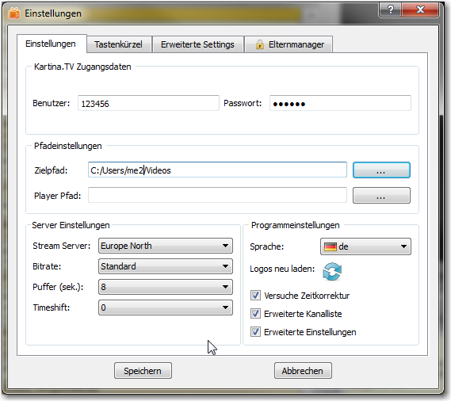
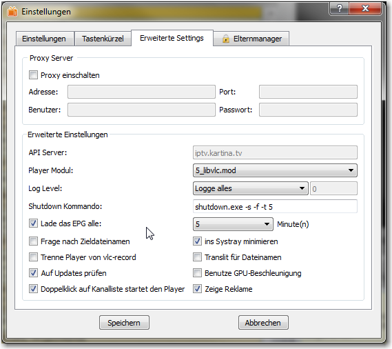
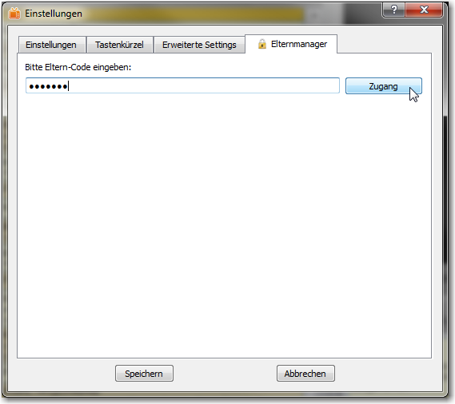
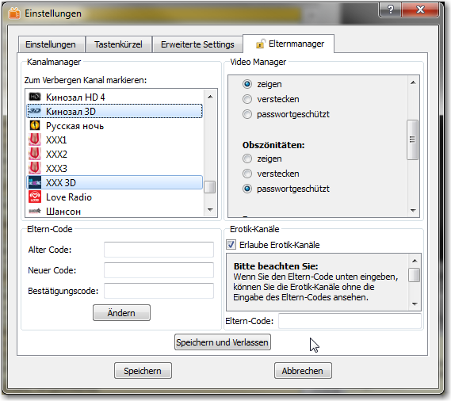
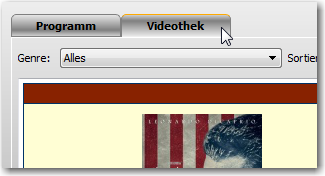
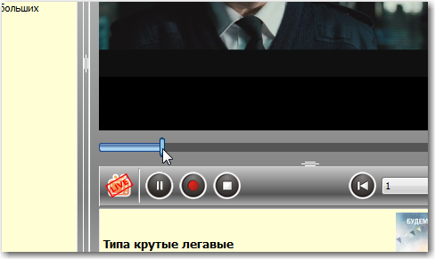
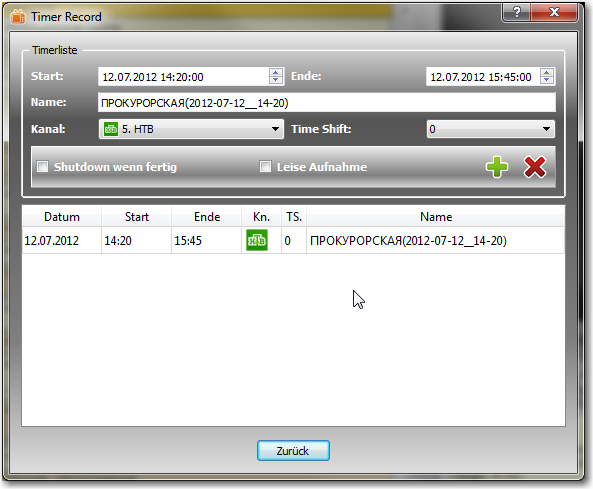

VLC-Record
Über
VLC-Record ist ein Programm, um IPTV Streams von Kartina.TV anzusehen oder aufzuzeichen.
Es wurde in C++ unter der Benutzung von Nokias Qt-Framework  geschrieben.
Die Player-Funktion wurde mit Hilfe der libVLC von
Videolans VLC player realisiert.
geschrieben.
Die Player-Funktion wurde mit Hilfe der libVLC von
Videolans VLC player realisiert.
VLC-Record ist OpenSource. Sie können den Source-Code als auch die neuesten Builds immer auf der
Projektseite finden (gehostet von Google-Code).
Versionen
Es sind Versionen verfügbar für:
- Windows (XP oder besser)
- Mac OSX 10.6 x86_64 oder besser
- Ubuntu Linux x86 (laufende version)
Branding (Customization)
VLC-Record gibt es in verschiedenen Brandings:
Diese Brandings unterscheiden sich nur minimal (z.B. in den Icons und dem API Server-Pfad).
Somit passt diese Dokumentation für alle verfügbaren Brandings.
Features
VLC-Record hat folgende Features:
- Wiedergabe und Aufnahme von Live-Streams
- EPG - Elektronische Programmvorschau
- Archiv - 2 Wochen für die meisten Programme (Wiedergabe / Aufnahme)
- Aufnahme-Timer
- Videothek (Wiedergabe / Aufnahme)
- Elternmanager
Installation
Windows
Das Programm wird standardmäßig in ihrem lokalen Programmordner installiert
(c:\Users\[Benutzername]\AppData\Local\[VLC-Record | Kartina.TV | Polsky.TV]). Damit benötigen sie
keine Administratorrechte, um das Programm zu installieren.
Die Programmeinstellungen werden in ihrem Ordner für die lokalen Einstellungen gespeichert
(c:\Users\[Benutzername]\AppData\Roaming\[VLC-Record | Kartina.TV | Polsky.TV]).
Mac OSX
Nachdem sie das dmg-Image geöffnet haben, können sie das App-Paket per Drag und Drop in ihren Programmordner
kopieren. Die Programmeinstellungen werden in ihrem Benutzerordner gespeicher
(~/[.VLC-Record | .Kartina.TV | .Polsky.TV]).
Ubuntu
Nachdem sie einen Doppelklick auf das deb-Paket gemacht haben, wird das Ubuntu Softwarecenter gestartet. Wenn
sie auf "installieren" klicken, werden das Programm sowie alle benötigten Bibliotheken installiert.
Außerdem wird ein Programmstarter angelegt. Um das Programm zu starten, drücken sie bitte kurz die
"Windows-Taste" ihrer Tastatur. Daraufhin können sie im Dash die Anfangsbuchstaben (z.B. vlc-) eingeben.
Jetzt sollte der Starter angezeigt werden. Ein Klick auf den Starter startet das Programm.
Sie können das laufende Programm auch an die Unity-Leiste (links) anheften. Dann können sie das Pogramm einfach
per Klick auf das Programm-Symbol starten.
Die Programmeinstellungen werden in ihrem Benutzerverzeichnis gespeichert (~/[.VLC-Record | .Kartina.TV | .Polsky.TV]).
Einstellungen beim ersten Start

Hier müssen sie ihre Zugangsdaten eingeben. Wenn sie die Erotik-Kanäle in ihrer Kanalliste angezeigt haben
wollen, markieren sie bitte die entsprechende Checkbox. Wenn sie den Eltern-Code in die untere Textbox eingeben,
können sie die Erotik-Kanäle ansehen, ohne den Eltern-Code eingeben zu müssen. Ich würde aber dringend empfehlen,
diese Textbox leer zu lassen.
Bitte beachten sie: Ihr Eltern-Code entspricht dem Account-Passwort solange sie diesen nicht ändern.
Dieser Dialog wird nur beim ersten Start des Programmes angezeigt. Wenn sie die Programmeinstellungen gelöscht haben,
wird dieser Dialog beim nächten Programmstart wieder angezeigt.
Einstellungen
Sie starten die Einstellungen, wenn sie auf folgendes Icon unten rechts in der Benutzeroberfläche drücken:

Haupteinstellungen

Auf dieser Seite können sie folgende Einstellungen vornehmen:
- Benutzer / Passwort
- Zielpfad - Wo sollen die aufgenommenen Videos gespeichert werden?
- Player Pfad - Wenn sie ein externes Player-Programm starten wollen, müssen sie hier den Pfad zu diesem Programm eingeben (optional).
- Stream Server (Standort) - Wählen sie den ihnen am nächsten liegenden.
- Bitrate - Wählen sie zwischen "Premium", "Standard", "Eco" und "Handy"
- Puffer - Zeit des Puffers in Sekunden. Erhöhen sie diesen Wert, wenn sie Probleme bei der Wiedergabe haben (Voreinstellung: 8s).
- Timeshift - Zeitverschiebung in Stunden zwischen moskauer Zeit und ihrer lokalen Zeit.
- Sprache - Die Änderung wird erst übernommen, wenn sie die Einstellungen abspeichern.
- Logos neu laden - Wenn sie Probleme mit den Logos in der Kanalliste sehen (z.B. wenn ein Logo nicht zum Sender passt) können sie hier die Logos neu laden lassen.
- Versuche Zeitkorrektur - Kompensiert kleine Zeitabweichungen zwischen dem API Server und ihrem PC (Voreinstellung: an).
- Erweiterte Kanalliste - Zeigt erweiterte Informationen über die laufende Sendung in der Kanalliste (Voreinstellung: an).
- Erweiterte Einstellungen - Aktiviert die Seite mit den erweiterten Einstellungen (Voreinstellung: aus).
Tastenkürzel

Here you can change the default shortcuts used in this program. To do so mark a shortcut with the mouse.
Now press the key combination you want as new shortcut. If the line turns red you already used this
shortcut for another command.
You can reset the shortcuts to the default values using the tool button at the lower end of this tab.
Advanced Settings

In this tab you can change following program settings:
- Proxy Server - Configure a proxy server if you can't connect directly to the internet.
- API Server - Change the API server. Activate this field by pressing Ctrl+Alt+A (default: iptv.kartina.tv {Don't touch it!})
- Player Module - Player dependent configuration files. Choose between "5_libvlc.mod" and "9_libvlc_odl.mod" (default: 5_libvlc.mod).
You can have a look at the module files itself to get an idea what's going on there. Don't touch it if you don't know what you're doing!
- Log Level - Configure what will be written to logfile (default: log everything). If you need help if something doesn't work as you
expected - don't change it!
- Shutdown Command - If you want to shutdown your computer (e.g. after timer record) you can insert a command here.
For Windows a default command is set.
- Refresh EPG - Update EPG information in a interval of X minutes (default: on with 5 min interval).
- Ask for Record Filename - Program will ask you for a filename as soon as you want to record any show (default: off).
- Detach player at startup - If you use an external player it will be detached from VLC-Record.
It then runs as independent process which VLC-Record can't control at all (default: off).
- Check for Updates - If on the program will check for updates each time it starts (default: on).
- Doubleclick starts play - If off play starts as soon as you click on a channel in channel list (default: on).
- Minimize to Systray - If on program will be hidden from taskbar when minimized.
An icon in the tasktray will tell about the running program instead (default: off). Disabled on Mac.
- Translit record filename - Transliterates a record filename from cyrillic into latin letters (default: off).
- GPU acceleration - Uses GPU for video decoding (highly experimental, default: off).
- Show Ads - Show commercials at the begin of a video (VOD). Changeable only in VLC-Record (default: on).
Parental Manager

Enter your parental code to enter the parental manager.

Here you can configure following things:
- Channel Manager - Selected channels will be hidden from channel list.
- VOD Manager - Select access for the various genres.
- Parant Code - Here you can change the parent code.
- Adult Channels - Here you can choose what to be done with the adult channels (in channel list).
Please Note: You have to save these settings directly in the parent manager. They are independent from the other settings.
Discovering the GUI

At the left side you see the channel list. Above the channel list is the area for the channel favourites. At the top left corner
you can choose between the live program and video on demand (VOD) - where available.
In the middle of the GUI you can see the electronic program guide (EPG). It shows the program for the choosen day and channel.
At the top of the EPG view there are buttons to choose a day and to jump one week forward or back.
At the lower end you can see a search field which lets you search for words in the currently shown EPG.
At the upper right side you see the player widget. Below it there are the play control buttons and below these buttons you can see a small
info widget.
At the lower right corner there are the settings-, the info- and the quit button.
Discovering Features
Favourite Channels

You can define up to 10 favourite channels - either by doing a right click at the channel in the channel list
and choosing "Add to favourites" or by using drag'n'drop. The channel will now be placed in the area above
the channel list. If you press at a favourite button the channel in channel list will be selected and the
EPG for this channel will be loaded. You can remove channels from the favourite area by making a right click there.
Video on Demand (where available)

You can activate the VOD browser by clicking at the button at the upper left corner.

You can choose a genre ...

... and sort the videos. There you can also choose to show you favourite videos.

Or you can search for a video.

You choose a video with a mouse click.

Now you can see the information about the selected video. You can add / remove the video to / from your favourites by clicking
at the heart at the top. You can record or play the video by clicking at the lower buttons. A click at [Back] brings you
back to the former site.
Archive
For most channels a archive is available. This means that you can watch any program which was sent on this channel
for the last two weeks.

You can watch or record this program by clicking at the play / record buttons in the EPG browser. If you choose
play here you can jump to any time in that program by using the slider below the player widget.

Timer Record
You can open the timer record dialog either by pressing on this
 button or by clicking
at the clock in the EPG browser.
button or by clicking
at the clock in the EPG browser.
Timer Record dialog will open:

In this dialog you can plan a record job. You can choose the channel to record from. You must give a name
for the file in which the video will be saved. You have to insert the start and the end time of the program.
When choosing "silent record" the program only will record the program, but not show. Checking the
"shutdown" box lets shutdown the computer after all records are completed. This only works if you have set
a shutdown command in the settings.
A click at the  button will add this record
to the job list. You can edit a stored record job by making a double click at the entry in the job list.
The data will now be displayed in the upper fields. You can now make your changes. A click at the
will save your changes. You can remove a
stored record job by marking it in job list and pressing the
button will add this record
to the job list. You can edit a stored record job by making a double click at the entry in the job list.
The data will now be displayed in the upper fields. You can now make your changes. A click at the
will save your changes. You can remove a
stored record job by marking it in job list and pressing the
 button. When adding a new timer record job the
program will check its validness.
button. When adding a new timer record job the
program will check its validness.